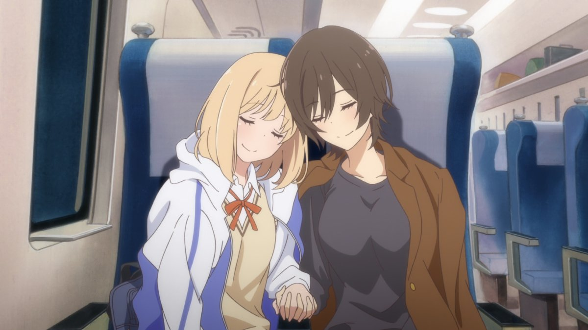

"Kase-san" is a series of manga about two high-school girls that fall in love. It's squarely in the "lesbian-romance" genre, sweet but just a little taboo to make it exciting. An OVA, about the length of a feature film, was released with the name "Kase-san and Morning Glories," sharing the name of the first volume of the series (how far along in the story it adapts, I don't know). Anime has always been pretty forward-thinking with depicting gender and sexuality of all kinds. There are genre definitions specifically for two-girls or two-boys falling in love, after all. But "Kase-san" is refreshingly blunt and pure about itself: it doesn't have any overarching plot beyond the relationship between Yamada, a shy girl in the gardening club, and Kase, a popular girl on the track team. It doesn't pretend that they're "just best friends" either: within the first minutes, it's clear they kiss, are dating, and even yearn for a physical relationship (in one scene, it almost happens, if not for a phone call interupting, by a mother no less). I was impressed by how sweet and adorably precious their relationship was. It appears that neither of them had actually dated before, so they fumble with how to proceed with the mutual relationship. I was giddy to see whenever one of them blushed or overreacted to a sweet word the other said, or the misunderstood romantic implication from Yamada's naive personality (Kase faints when Yamada first says "as your girlfriend... what exactly do you want me to do for you?"). I don't know many anime fans who still feel uncomfortable with a same-sex couple (by 2018, especially), so I can imagine this being screened in an anime club, for the entire audience of teenagers to swoon and laugh at each moment. It's surprsingly laugh-out-loud funny, and easy to laugh along with with a lack of malice in the story. Other than one moment on a bed, it's largely family-friendly too, perfectly suitable for pre-teens.There is a bit of drama in the relationship to make things more interesting. Kase's general popularity makes her difficult for Yamada to find alone time with her, sometimes barely getting a smile and wave in-between classes (even though it's clear Kase wants to be with Yamada just as much). Like any relationship, Yamada gets more nervous as things progresses, and Kase's misunderstands multiple times that she doesn't want to date anymore. Near the end, the two have to decide on college, but... what if they have to go to different schools?! It's mostly expected stuff, and things rush through a bit quickly in the one-hour runtime of the OVA. A lack of a satisfying conclusion doesn't help either. You can expect the story to not really matter, and just be an excuse to have scenes that show how much the two youths love each other. Otherwise, I was impressed by how natural their relationship seemed to be treated by other girls in the school. There aren't any boys rendered in the animation, although one scene with their voices implies Yamada's general discomfort with men, something that might be interpreted as a bad stereotype by picky viewers. The OVA was animated by Zexcs, and has a nice watercolor-approach for skies, flowers, and some other backgrounds. It's colorful and sweet like manufactured ice-cream, but generally pleasent to watch. Music is good, with the significant track being the vocal song in the credits by the two lead actresses. There's an English dub here, and Kase is given a lower-voice to fit her tomboy-ish character, which sounds a little too familiar to a lot of male characters in dubs (of course, a lot of younger male characters are voiced by women in many languages). It took time to get used to, but I liked it, and it does justice to the content."Kase-san and Morning Glories" is an OVA clearly meant to help advertise the manga (the Bluray from Sentai Filmworks even has an advertisement for the volumes from Seven Seas Publishing in the box). The studio originally made a short film before this longer one (a missed opportunity not to include both on the release). Again, I don't know if the OVA speeds through the entire plot or not, but it feels like this would have been a great opportunity for a series of films, or a standard television show. It'd be a shame if this is all that we get in animation, but regardless, I fell in love with these two lovers and hope the world for them. One good thing for a 60-minute film: it's easy to watch again and again, to make a day a little brighter.
- "Ani" More reviews can be found at : https://2danicritic.github.io/ Previous review: review_Karas_-_The_Prophecy,_The_Revelation Next review: review_Keep_Your_Hands_Off_Eizouken